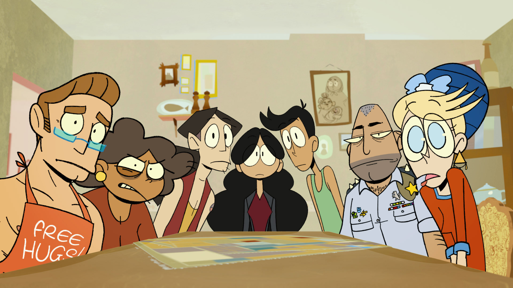
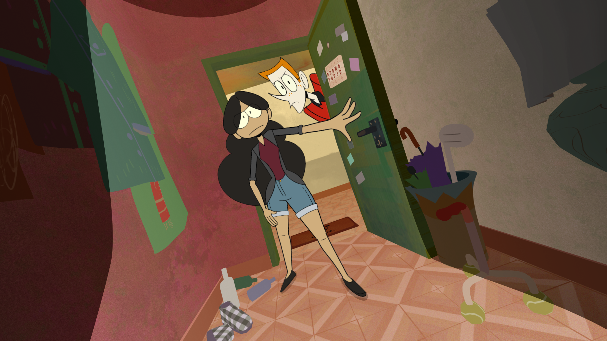
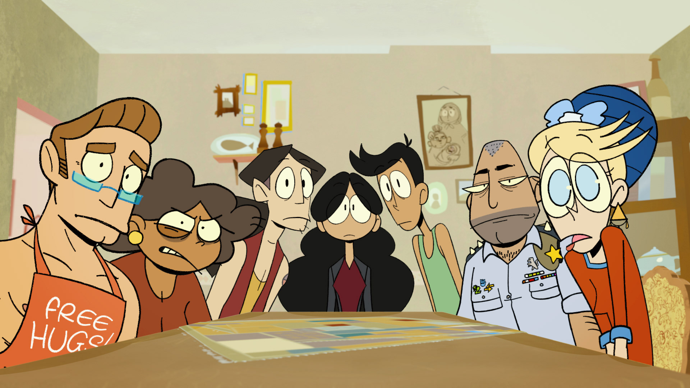
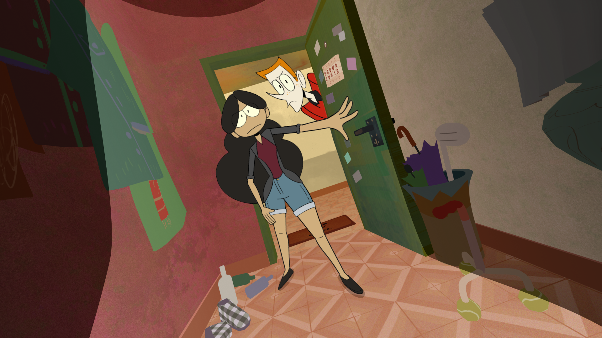

The Fenestas

Web series created for the Israeli Broadcast Corporation - Kan. A dysfunctional family has to vote its own members off their grandfather’s will, as part of a twisted competition for his amusement before he dies.
Co-creator along with Anan Gibson and Shalev Ben Elya. Worked as editor, compositor and background artist and created a unique pipeline with 3D backgrounds and 2D characters.
 


